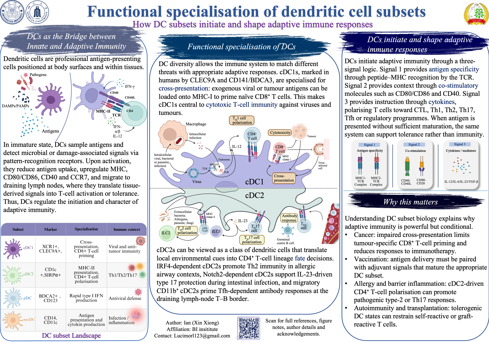

Academic Outputs
Outputs Archive Coursework, documents, and visual records
This page collects selected work in pan-cancer single-cell data integration, course posters, core documents, and project presentations.
Current Focus
Overview of DC cell subset differentiation and function.
Literature presentation and review notes
Pan-cancer Data Integration
Interactive 3D UMAP
Single-cell Atlas / Refined Annotation
Integrated pan-cancer tumor microenvironment UMAP
This interactive projection summarizes a large-scale pan-cancer single-cell integration project spanning more than two million cells across over ten cancer types. The browser view renders a representative 70,000-cell set with refined cell-subtype annotations.
- Integrated scale
- 2M+ cells
- Cancer types
- 10+
- Rendered points
- 70,000
Coursework Poster
Poster_01
Core Documents
Primary Access
Latest CV
Current academic CV, containing GPA, honors, research projects, technical skills, and training experience.
Transcript
Official transcript documenting coursework performance and current academic standing.
Review Reading
Selected reading notes connecting metabolism, cancer immunotherapy, and synthetic biology thinking.
Presentation Library
Decks